Events
-

September 26
2018 NGP Annual Retreat
Dr. Lee will be giving a talk at the 2018 NGP Annual Retreat.
-
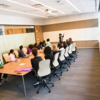
September 14-15
CCBS Retreat
Lab members Mattew Heard, Kevie Bovaird, and Matthew Moritz presented their research at the CCBS Member Fall Retreat.
-
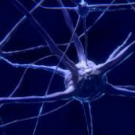
September 13
Dr. Lee and Matthew Heard gave a lightning talk at the MBI-CBI Minisymposium on "Shared Neural Network Between Music and Language".
-
August 8
Humanities and Cognitive Sciences High School Summer Institute Talk
Dr. Lee gave a talk at the Humanities and Cognitive Sciences High School Summer Institute.
-
July 24
International Conference of Music Perception and Cognition Talk
Matt and Dr. Lee gave a talk at the International Conference of Music Perception and Cognition.
-

April 5
Brain Health & Performance Summit
Dr. Yune S. Lee presented the Ohio State Lightning Talks at the Brain Health and Performance Summit from 1-1:50 pm.
MORE -
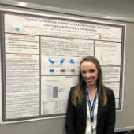
March 24
OSLHA Spontaneous Rhythm Tapping Presentation
Kate Corbeil presented her study: "'Tapping' into the etiology of pediatric communication disorders: Spontaneous rhythm tapping predicts auditory working memory" at the 72nd Annual OSLHA Convention.
-
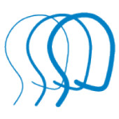
March 14
Traumatic Brain Injury Summit
Yune Lee presented his work on traumatic brain injury at the Brain Injury Association of Ohio’s 2018 TBI Summit, sponsored by CBI.
MORE -
December 18
Shimadzu Grant
SLAM Lab recieved a $380k grant from Shimadzu Scientific Instruments, Inc. to fund for a purchase towards a LabNIRS system.
-
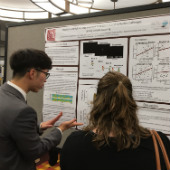
November 13
Rhythm Sensitivity Presentation
Sanghoon Ahn presented his research, "Rhythm sensitivity assists in overcoming acoustic and syntactic challenges during speech listening", in Baltimore, MD.
-
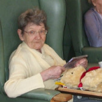
July 21
Arlington Court Nursing Home Seminar
Aeisha and Yune gave a public seminar titled "The Brain Music and Well-Bing: The BMW theory" at the Arlington Court Nursing Home.
GALLERY -
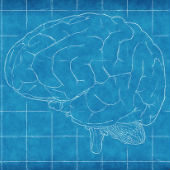
April 28
2017 Brain Health and Performance Summit “Arts & Rehabilitation” Panel
Chronic Brain Injury sponsored the “Arts & Rehabilitation” panel on April 28, 2017 at the 2017 Global Brain Health & Performance Summit, where Dr. Yune S. Lee participated as a panalist.
MORE -
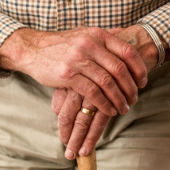
April 14
“Aging in Community” International Standardization Symposium
Dr. Yune S. Lee ( Assistant Professor, Ohio State Univ.) spoke about “Neural compensation supporting successful communication in normal aging”.
-
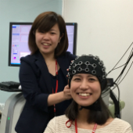
April 11
Shimadzu LC-MS Equipment Grant
SLAM Lab and the OSU Center for Brain Injury received an equipment grant from Shimadzu Scientific Instruments, Inc. towards the purchase of a LightNIRS system.
-
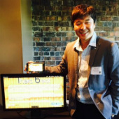
April 8
SLAM Lab at ShowOHI/O
The app development team for Therabeat demonstrated their project at the 2017 ShowOHIO.
GALLERY -
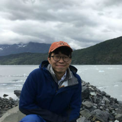
March 31
Congratulations to Sanghoon!
Sanghoon has received a summer research fellowship in support of his work.